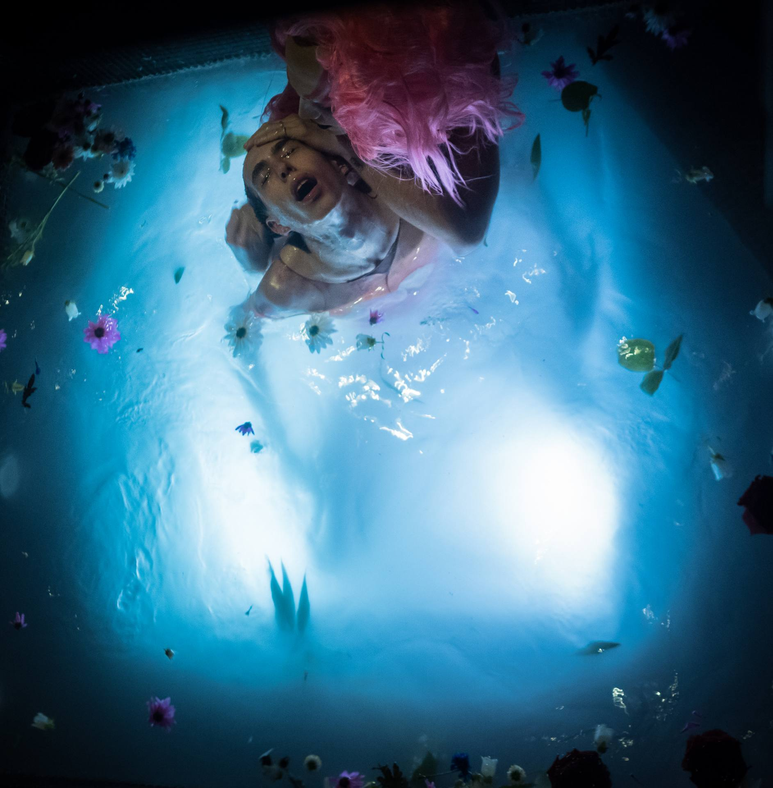
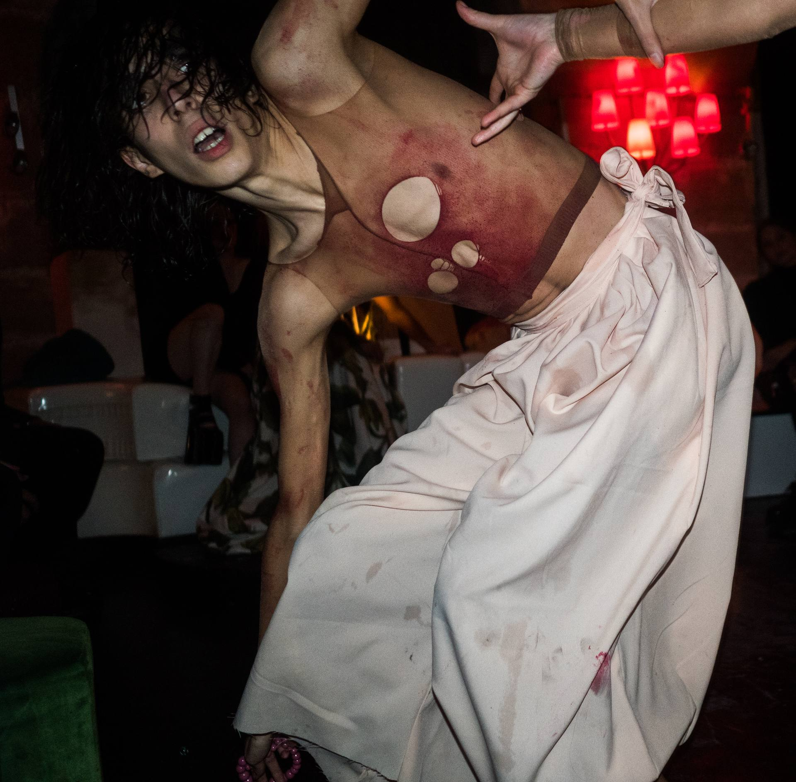
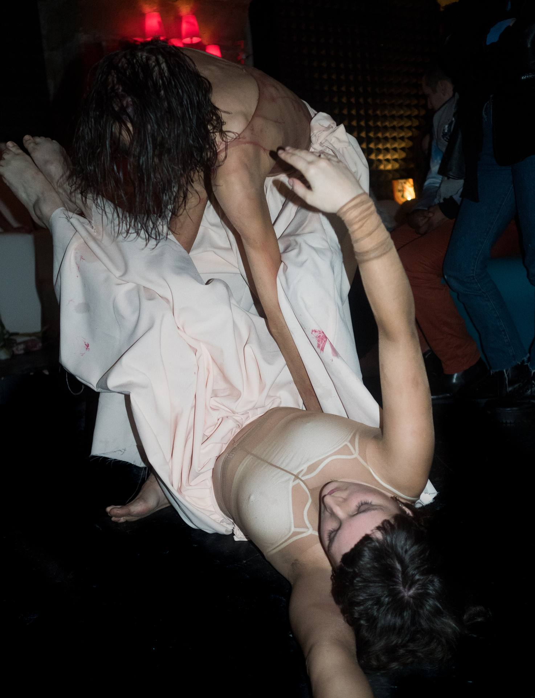
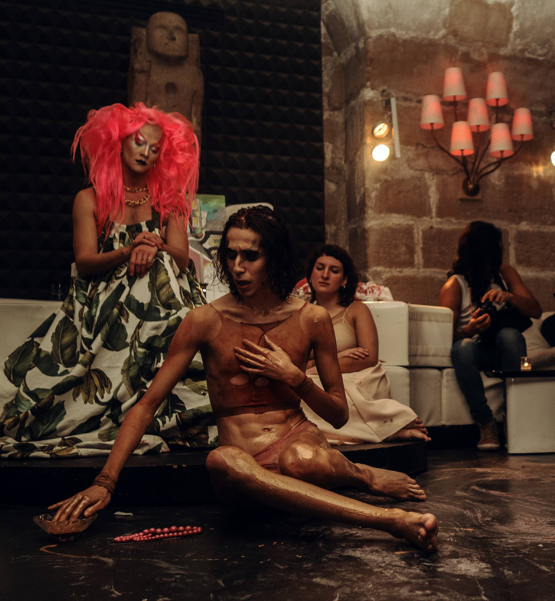
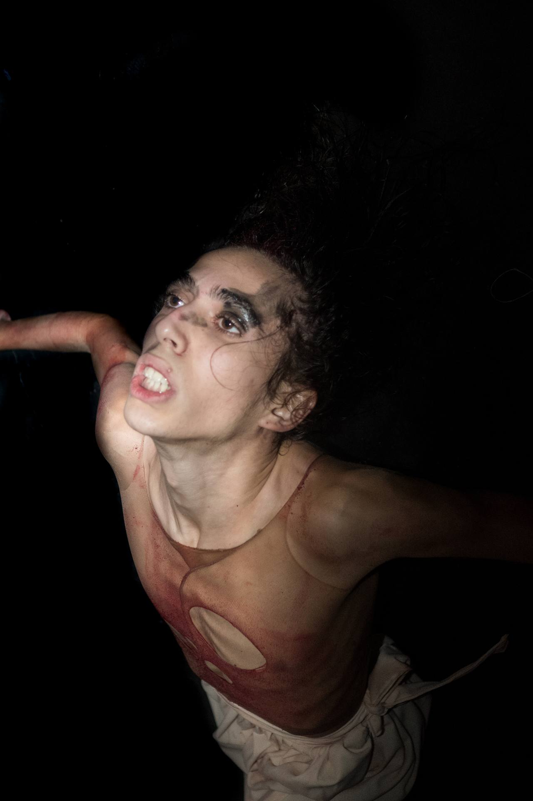
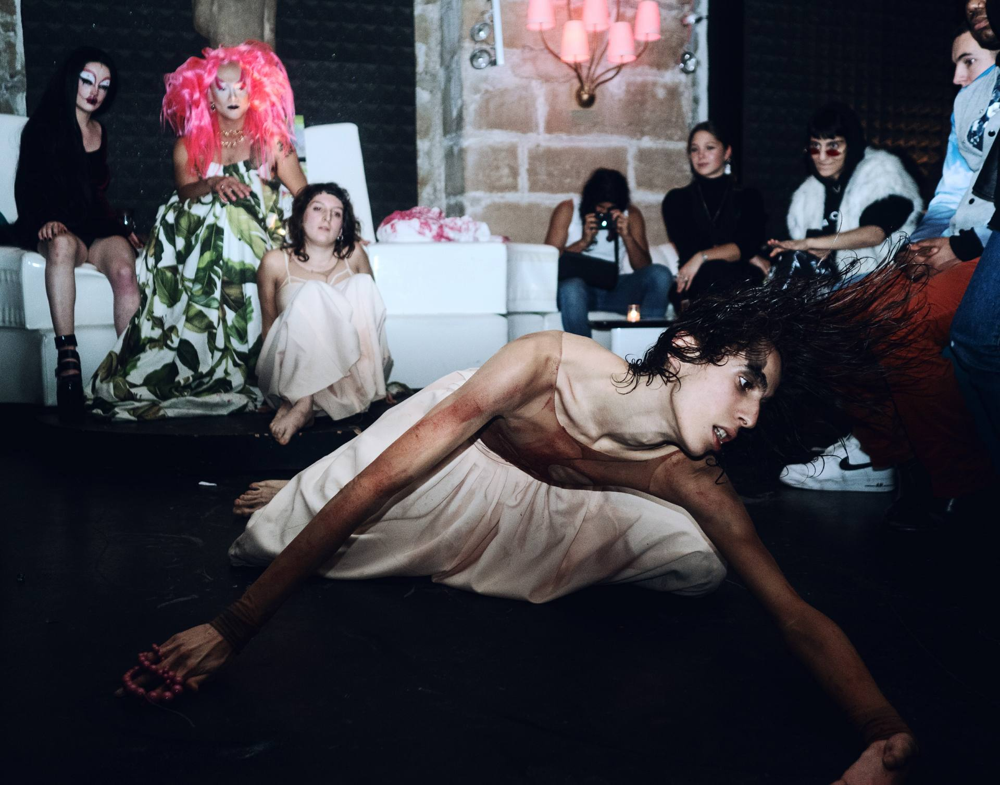

POLYMORPHE
POLYMORPHE
/
POLYMORPHE

Avec SchlampaKir Von Fickdich et Garance Maillot, trois corps se retrouvent pour célébrer ce que la famille biologique n'a pas toujours su donner : le choix.
With SchlampaKir Von Fickdich and Garance Maillot, three bodies meet to celebrate what biological family has not always known how to give: the choice.
Renaissance est une performance en tableaux rituels sur l'affiliation queer — cette façon qu'ont les communautés marginalisées de se construire des lignées de substitution, des filiations inventées, des tribus choisies.
Renaissance is a performance in ritual tableaux on queer kinship — the way marginalised communities build substitute lineages, invented filiations, chosen tribes.


Destruction d'abord, parce qu'on ne renaît pas sans avoir brûlé quelque chose. Transformation ensuite — les corps, les gestes, les identités qui se réinventent dans l'espace d'une vingtaine de minutes. Réaffirmation enfin : non pas comme happy end, mais comme acte politique.
Destruction first, because there is no rebirth without having burned something. Transformation next — bodies, gestures, identities reinventing themselves in twenty minutes. Reaffirmation last: not as a happy ending, but as a political act.
On redéfinit ici ce que famille veut dire, ce que communauté veut dire, ce que la force collective des gens qu'on n'attendait pas peut produire.
Here we redefine what family means, what community means — what the collective force of unexpected people can produce.



